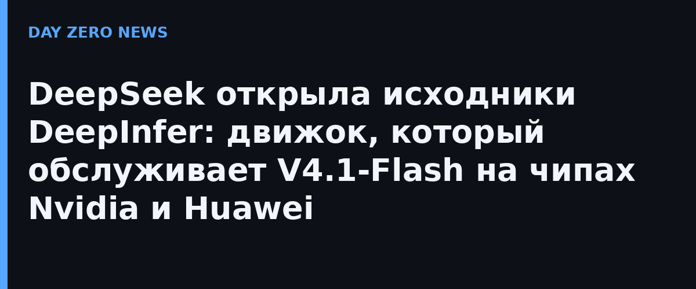

21 октября DeepSeek выложила на GitHub репозиторий DeepInfer — фреймворк вывода, который компания разработала для собственных нужд и который крутит её модель DeepSeek-V4.1-Flash в промышленном масштабе. Код доступен под разрешительной лицензией Apache-2.0, в составе — ядро deepinfer, кластерные модули deep_cluster, нативные расширения C++, тесты и примеры. Это уже не первый шаг серии: ранее компания открыла индекс своей ИИ-инфраструктуры и инструменты для чипов Huawei, а теперь добралась до самого «движка», на котором держится её онлайн-сервис.
DeepInfer рассчитан на DeepSeek-V4.1-Flash — модель с архитектурой сентября 2026 года, которая требует меньше памяти при качестве выше предыдущей V1 Pro, а обновление в субботу вывело её, по замерам независимого агентства Artificial Analysis, в число самых мощных и экономичных моделей с открытыми весами. Ключевая фишка фреймворка — поддержка двух аппаратных платформ сразу: серверных графических процессоров Nvidia уровня SM100 Blackwell и китайских Ascend 950 от Huawei. В технической статье на площадке Zhihu сотрудники DeepSeek подсчитали, что один вычислительный кластер с V4.1-Flash на DeepInfer способен приносить выручку, эквивалентную примерно 38 долларам за видеокарту в час, по тарифам непикового времени. Исследователи компании не скрывают мотивации: назревающее противостояние открытых и закрытых моделей они сравнивают с битвой «света и тьмы» и открыто говорят о «тотальной победе» над закрытыми конкурентами.
V4.1-Flash — модель с открытыми весами, значит сторонние облака крутят её на своей инфраструктуре. С открытым DeepInfer хостинг-провайдеры получают шанс заменить проприетарные стеки вывода и сбить цену без скидок «за managed-версию» — DeepSeek прямо обещает снижение стоимости вычислений и энергопотребления. Правда, с нюансом: открыт именно движок, а не модель, и часть обслуживающих компонентов для продакшена пока остаётся у компании, так что «бесплатный аналог облака DeepSeek» из репозитория сам не соберётся.
Инференс-фреймворки (vLLM, TensorRT-LLM и другие) — это скрытая экономика ИИ-отрасли: от них зависит, во сколько обходится каждый сгенерированный токен. Появление в открытом доступе движка уровня промышленного сервиса DeepSeek — редкий случай, когда передовой код такого класса публикуется целиком и сразу под нормальной лицензией. А двойная поддержка Nvidia и Huawei делает DeepInfer ещё и инструментом санкционной обходной манёвренности: китайским операторам он позволяет выжимать из Ascend почти то же, что из Blackwell.
Российские разработчики inference-стеков (например, команда FinaM на базе vLLM от Сбера) идут по похожему пути открытой публикации оптимизаторов вывода, так что тренд общий: battle за токен выигрывают не только модели, но и движки под ними.